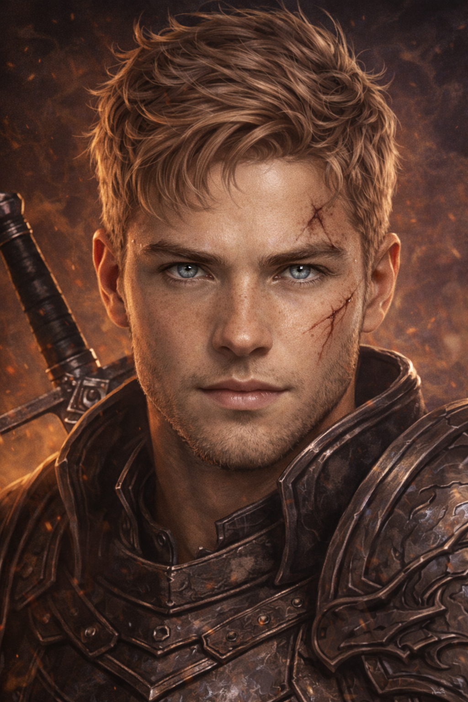
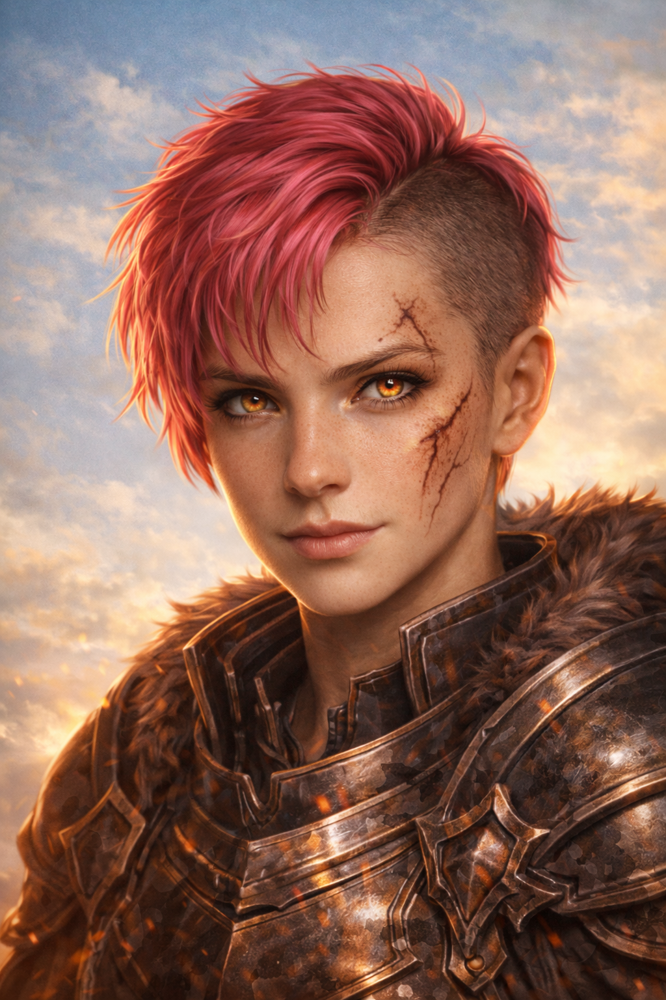
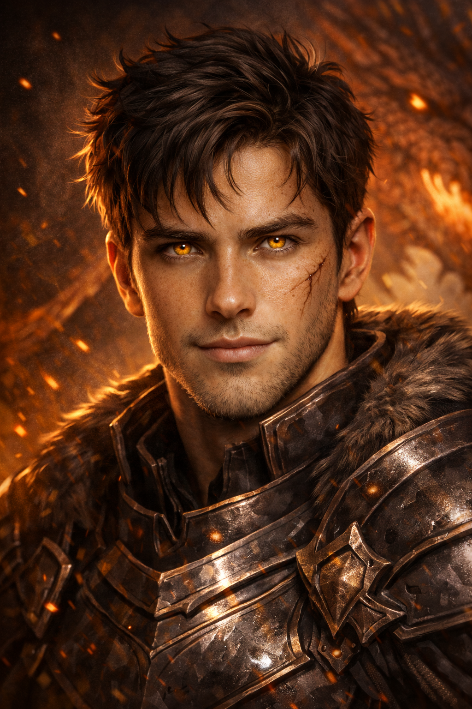
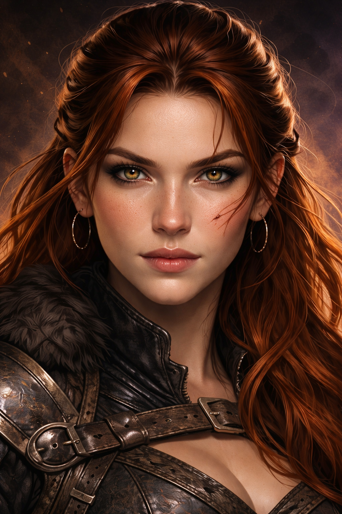

Perfiles
21
Totales, 16 activos / 5 inactivos
Registro de jinetes vinculados y perfiles estratégicos del archivo.








Vínculos confirmados, perfiles de amenaza y especímenes registrados.

Reconocimiento inicial de territorios áridos al sur de Navarre. Objetivo: localizar hábitats de dragones no registrados y evaluar condiciones de nidificación.
Avistamientos de actividad dracónica en formaciones rocosas del cinturón árido oriental. Se recomienda despliegue de exploradores para confirmar presencia de nuevas especies.
Actualización de rutas aéreas seguras para expediciones de largo alcance. Se identifican corrientes térmicas favorables para dragones de gran envergadura.
Operación en curso destinada a localizar zonas de incubación en regiones áridas. El archivo sugiere presencia potencial de linajes antiguos adaptados al clima extremo.
Vínculo excepcional con doble conexión dracónica y valor estratégico extraordinario.
Enlace de élite marcado por disciplina, liderazgo y capacidad ofensiva.
Pareja consolidada en frontera, fiable en despliegues prolongados y vigilancia.
Vínculo de respuesta rápida con alto nivel de coordinación aérea y defensa cercana.